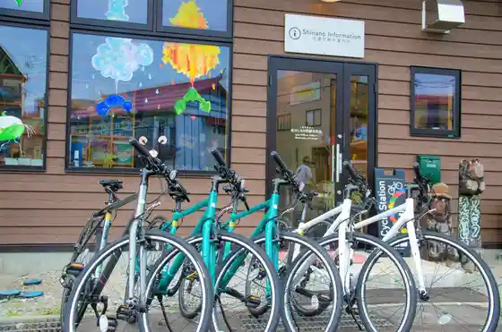
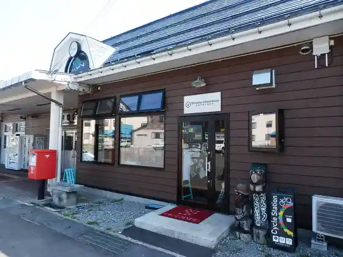
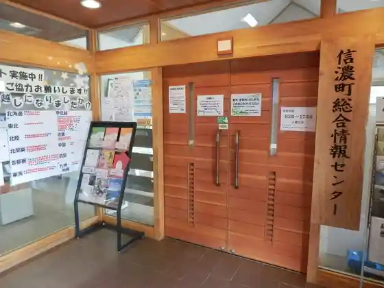

Tanguramusukiisakasu
Shinano, Nagano · 026-258-3511 · Official / source link
Ippan Shadanhojin Shinshu Shina no Town Tourism Association
Shinano, Nagano · 026-255-3226 · Official / source link

Shinano Tourist Information
Shinano, Nagano · 026-255-3226 · Official / source link

Shinano Sogojoho Center
Shinano, Nagano · 026-255-6677 · Official / source link

Dowa no Mori Gyararii
Shinano, Nagano · 026-255-6720 · Official / source link
LAMP Nojiriko
Shinano, Nagano · 026-258-2978 · Official / source link
Kurohimekogen Su no Park
Shinano, Nagano · 026-255-3171 · Official / source link
Mizumi Rakuen Campground
Shinano, Nagano · 026-258-3014 · Official / source link
Nae Meiro (Jishin Taki)
Shinano, Nagano · 026-255-3226 · Official / source link
Shinano no Hotaru
Shinano, Nagano · 026-258-2090 · Official / source link